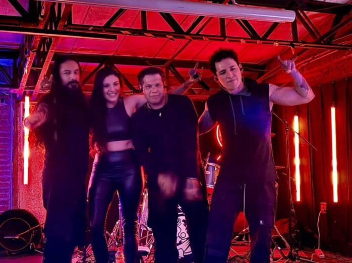

Kälad irrumpe en la escena con su primera producción de larga duración titulada “ÄRKAMINE”, un álbum que no teme experimentar con los límites del Metalcore, Djent y Post Hardcore.
Con 8 temas originales, el disco narra la incesante experiencia del ser humano cuando es llamado hacia el despertar espiritual. La banda fusiona la agresividad del Modern Metal con toques sinfónicos sutiles que elevan la complejidad de la obra.
CONCEPTO ESPIRITUAL
Ärkamine es un viaje a través de las vivencias, dolencias, alegrías y tribulaciones que conlleva el proceso de transmutación del alma.

KÄLAD: FUSIÓN DE SONIDOS MODERNOS
FICHA TÉCNICA
Estudio Empire Live Records
Composición Christiane Brambila
Producción Roy Cantú
Mix & Master Gus Calavera (Harmony Box)
Tracklist 8 Temas Originales
Grabado con precisión técnica y una visión clara, “ÄRKAMINE” posiciona a Kälad como una propuesta fresca y profunda dentro del metal nacional actual.
REPRODUCIR EN SPOTIFY